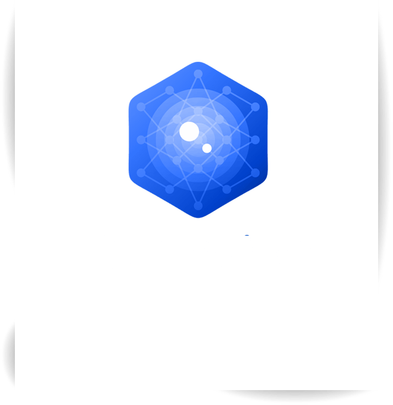

Система контроля и управления доступом (СКУД)
Система контроля и управления доступом (СКУД) с распознаванием лиц и автоматизированной выдачей пропусков
Автоматизированная система контроля и управления доступом представляет собой централизованную систему автоматической выдачи пропусков в здании Заказчика и предназначена для автоматизации процессов регистрации всех видов посетителей и сотрудников
Функции терминала:
- Сканирование паспорта, либо другого документа, удостоверяющего личность.
- Автоматическое распознавание данных с документа и внесение их в базу данных,
- Созданием карточки посетителя с его фото, сравнение с фотографией в документе.
- Выбор цели визита и предоставляемых услуг.
- Выдача пропусков в виде пластиковых многоразовых карт, либо бумажного пропуска со штрих-кодом.
- Оформление предварительных заявок на посещение для групп посетителей.
- Формирование расписаний проведения мероприятий и доступа посетителей и сотрудников на Объект с помощью распознавания лиц.
При оформлении пропуска, посетителю демонстрируется Блок согласия на обработку персональных и биометрических данных, согласно закону 152-ФЗ. Посетитель должен дать согласие на обработку.
Функции прилагаемого программного обеспечения:
- Внесение данных паспорта и фотографий посетителя с базу данных.
- Контроль за временем нахождения в здании.
- Архив посещений, проходов (входов/выходов).
- Интеграция с любыми внутренними устройствами в здании, таких как турникеты, камеры наблюдения, арочные металлодетекторы, сканеры штрих-кодов, карт-считыватели, датчики движения, датчики пожарно-охранной сигнализации и тд.

- Интеграция с базой данных заказчика.
- Блок “Шагомер” отвечающий за время пребывания посетителей и расчет, предсказания требуемого времени, отслеживание нахождения посетителя, блокировка пропусков. Сравнение и автоматический пропуск первых лиц без карт (распознавание по лицу).
- Блок различных типов уведомлений (отказ оборудование, обнаружение нарушителей, нарушение режима и др.). Разработка аккаунтов “Техник”, “ГБР”
- Блок обнаружения камерами лиц из чёрных списков.
- Механизм взаимодействия тревожной ситуации с группой охраны быстрого реагирования, выдача подробного описания проблемы, нарушения, с фото из базы («Тихая тревога». Механизм блокирования и тихого обезвреживания лиц из базы террористов и преступников в розыске. Применяются алгоритмы рассылки тревожных оповещений на АРМ ГБР с фото, ФИО, координатами нарушителя и затягивания времени его нахождения у турникета и киоска регистрации).
- Уровни доступа в программу с различными функциями аккаунтов типа “Отдел кадров”, ”Бухгалтер”, “Администратор”, ”Секретарь”, “Руководитель” и др.
Дополнительные функции, устанавливаемые опционально:

- Разработка нейронной сети для распознавания объектов с камер, запрещенных к внесению в здание. Модуль обработки и привязки проносимых вещей к каждому посетителю. Внесение информации в базу данных.
- Выдача документов и справок в киоске, получение отчетности (которые делает секретарь, командировочные, посещения, опоздания, нарушения и др), печать документов.
- Разработка механизма передачи информации через информационный киоск.
- Программно-аппаратное считыватель вен ладони посетителей (бесконтактный), как ещё один признак аутентификации для системы СКУД.
- Разработка аккаунта “Сотрудник”, в котором каждый работник лично может увидеть всю информацию о себе, получать документы, справки, видеть журнал опозданий сотрудников (с предметным доказательством - фото).
- Использование терминала для аудио и видео связи с сотрудниками (замена телефонов в закрытых госучреждениях). Взаимодействие записывается и сохраняется в базу данных.
функции социального назначения:

- Определение дистанции между посетителями (голосовое уведомление, интерактивное - на экране)
- Распознавание лица в медицинской маске
- Детектор присутствия медицинской маски на лице посетителя
- Распознавание-детектирование температуры посетителя (ограничение при выдачи пропусков, предотвращение попадания сотрудников, посетителей с повышенной температурой)
- Ведение журнала температурного контроля, уведомление как сотрудников, так и посетителей
- Создание карты посещаемости, трекинг людей. Например обнаружение очередей в кабинеты. Создание такой карты (можно даже по этажам) позволит оптимизировать загрузку сотрудников, а также увидеть, что происходит в здании в реальном времени.
- Динамический поиск. Процедура обнаружения человека на территории в поле зрения камер. Может быть начата Оператором, Секретарем, или любым другим уполномоченным сотрудником. При обнаружении сотруднику, начавшему поиск, приходит оповещение с информацией о местонахождении человека и ссылкой на обнаружившую его камеру.
- Динамический поиск. Процедура обнаружения человека на территории в поле зрения камер. Может быть начата Оператором, Секретарем, или любым другим уполномоченным сотрудником. При обнаружении сотруднику, начавшему поиск, приходит оповещение с информацией о местонахождении человека и ссылкой на обнаружившую его камеру.
- Динамический поиск. Процедура обнаружения человека на территории в поле зрения камер. Может быть начата Оператором, Секретарем, или любым другим уполномоченным сотрудником. При обнаружении сотруднику, начавшему поиск, приходит оповещение с информацией о местонахождении человека и ссылкой на обнаружившую его камеру.